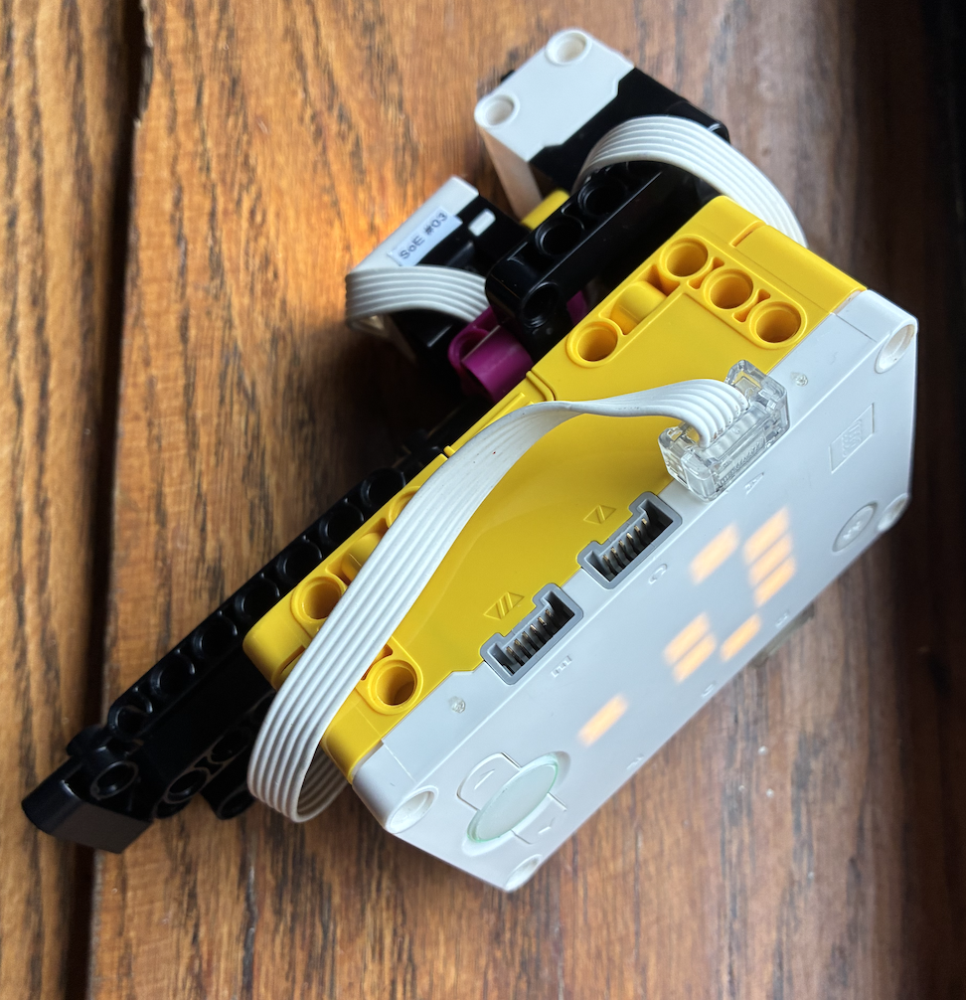
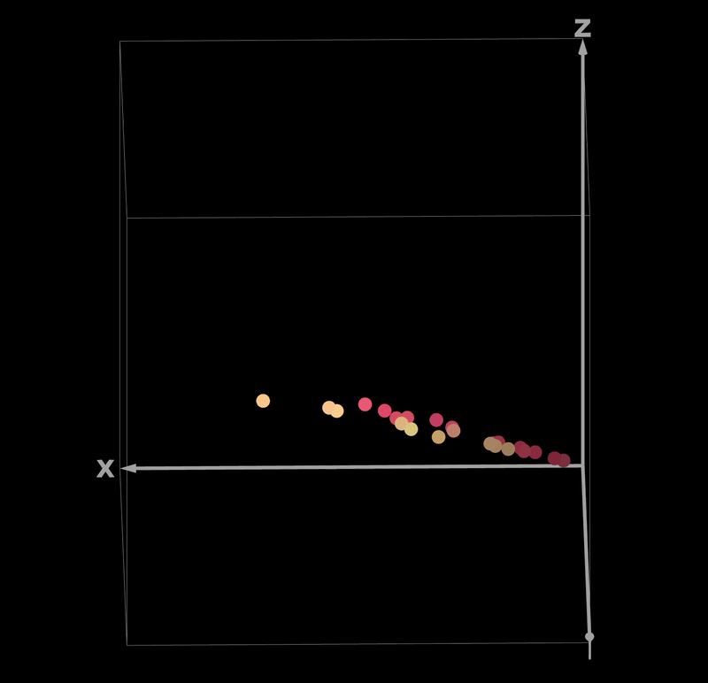
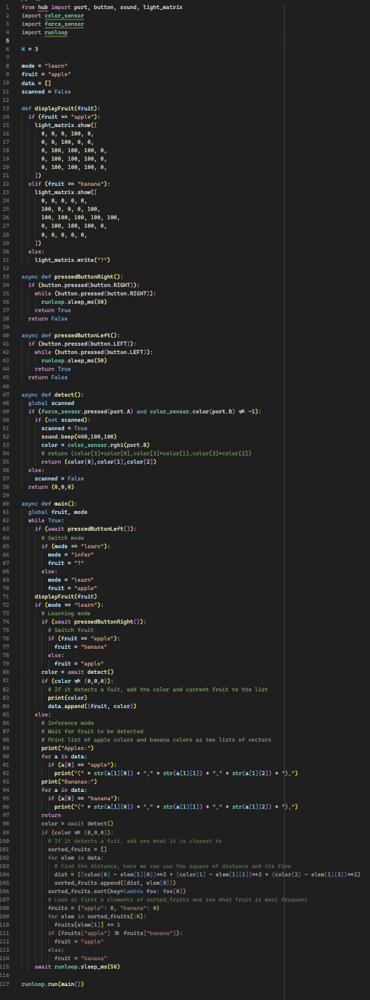

Here, we are classifying apples and bananas using a K-Nearest-Neighbor (KNN) machine learning algorithm. This is one of the most basic artificial intelligence algorithms that exists. What it does is take sample points and put them into some dimentional space (here, I have it in 3D, one dimention for each color channel).
The device I constructed to acheieve this is incredibly simple. I wanted to make it function similar to a barcode scanner you would find in a store, so I could quickly grab many data points. After some initial experimentation with a distance sensor, I decided to use a force sensor to detect when touching an object. The color sensor can then tell the hub what color is being seen then.


Here, you can see a set of points I collected of an apple and banana in 3d space. The x, y, and z coordinates represent the red, green, and blue values of the color, respectively (converted from the SPIKE Prime scale to a common 8 bit scale). I converted the colors to HSV and then boosted the value in order to show it more clearly. The graph can be accessed here.
The code for this project was pretty interesting. The gist of it is that there are two primary modes: Learn and Inference. In the learning mode, the screen either shows an apple or banana. When the device sees a color and the trigger is pressed, a data point containing that fruit and color value is addded to the set. In inference mode, the device waits until it can see a fruit. When it does, it classifies it as either an apple or banana by looking at the three closest data points (K=3) in 3-dimentional space and seeing what type of fruit is most frequent.
